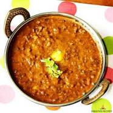
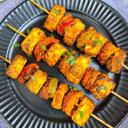
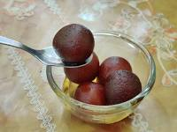

Featured Recipes
-

Chicken Biryani
Category: Main Course
Description: Aromatic rice cooked with tender chicken and a blend of fragrant spices. A delight for biryani lovers!
View Recipe -

Vegetable Biryani
Category: Main Course
Description: Flavorful basmati rice cooked with a medley of seasonal vegetables and aromatic spices. A vegetarian delight!
View Recipe -

Dal Makhani
Category: Side Dish
Description: Creamy and luscious black lentils simmered with butter, tomatoes, and a blend of spices. A classic accompaniment to Indian meals.
View Recipe -

Paneer Tikka
Category: Appetizer
Description: Succulent cubes of paneer (Indian cottage cheese) marinated in spices and grilled to perfection. A vegetarian delight with smoky flavors!
View Recipe -

Gulab Jamun
Category: Dessert
Description: Soft and spongy milk dumplings soaked in a fragrant sugar syrup. A heavenly Indian sweet to end your meal on a sweet note!
View Recipe